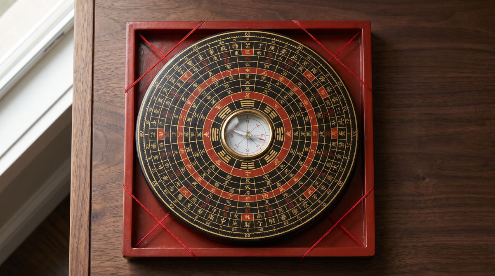
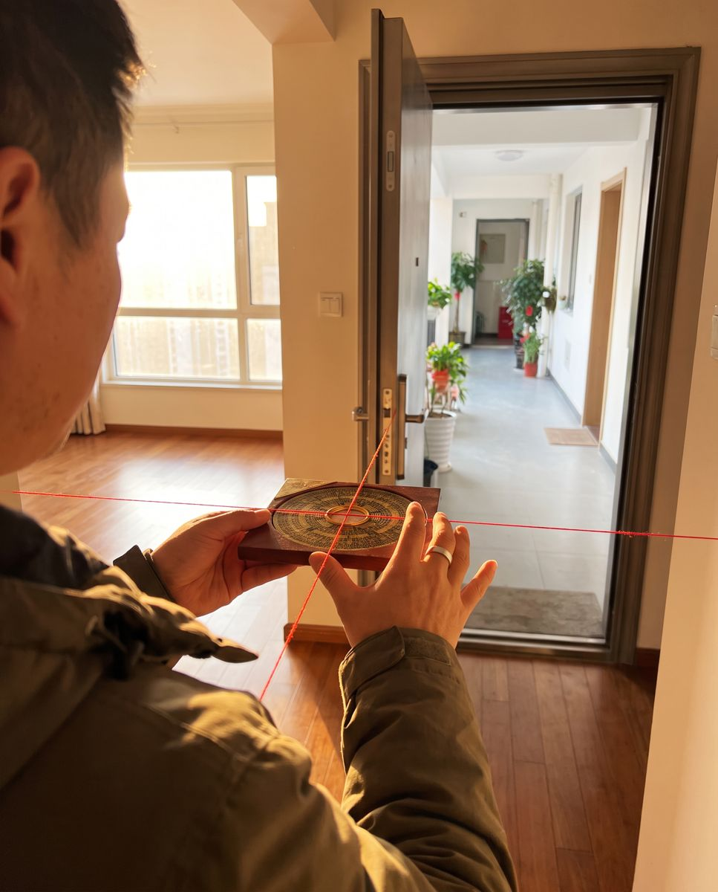

01 / 09
Luo Pan罗盘
The Feng Shui compass
A magnetic needle set in a disc of rings — from a handful to more than forty — each ring a different formula: the eight trigrams, the 24 Mountains, the 60 dragons, the stars. The square base and two red threads let the master sight a wall or a door exactly.
- How it's used
- Stand inside the main door, look straight out, keep the plate level and away from metal frames. Turn the dial until the needle sits on the north–south line, then read where the red thread crosses the 24 Mountains ring.
- Why it matters
- Each of the 24 Mountains spans only 15°. Being 3° out can put a home in the wrong chart, so every other calculation starts here.